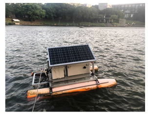
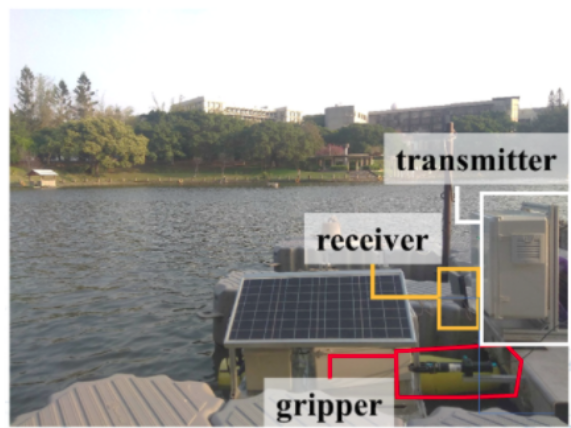
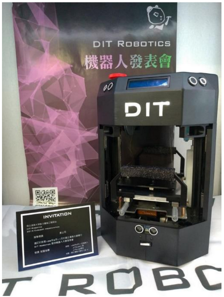
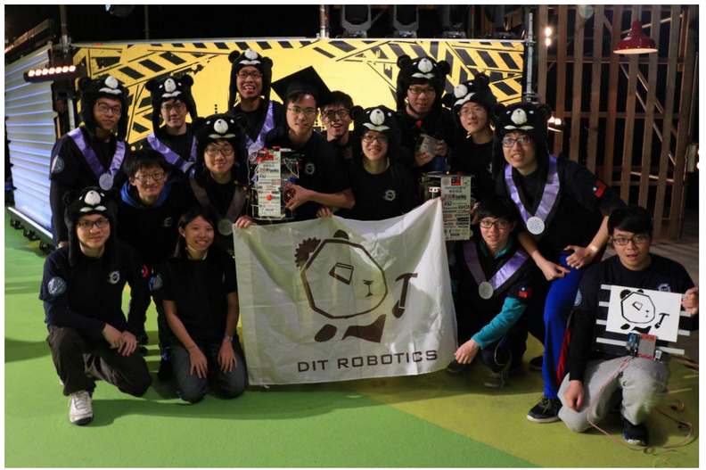

Tron Future InterceptorV

Maritime RobotX Challenge
Won 3rd place out of 20 teams in the competition
Developed resilient communication system using the combination of customized Wi-Fi device TVL and Xbee; achieved stable communication between WAM-V and shoreside base station for situation awareness purpose. Integrated lidar and camera to get the precise depth of the desired object in the bounding box with Python and ROS, and is used in docking, find and fling, entrance and exit, scan the code mission. In charge of WAM-V-related missions; responsible for heartbeat and design of find and fling system Head of Control & Communication system, responsible to all propulsion and communication system on board, including cracking Torqeedo motor RS485 protocol. Paper Website News
Resilient communication system used in multi robot search and rescue mission
Implemented HRVO algorithm to multiple USV, prevent multiple USV from colliding to each other during doing search and rescue mission in same area.
Applied resilient communication system to USV, let USV can switch to decentralized mode when facing signal interference.
Long-term monitoring USV


Eurobot - International robotics contest 2019

Eurobot - International robotics contest 2018

Duckiepond 2.0

MOOS & ROS waypoints navigation
I audit Marine Autonomy, Sensing and Communications(MOOS-IvP) course given by MIT, the course focus mainly on software and algorithms for autonomous decision making by vehicles operating in the ocean environments. We accomplish the final project of the course at Bamboo Lake, Taiwan. Executing multi-vehicles waypoints navigation by MOOS using Duckieboats which are developed by our laboratory.
I am responsible for the communication between multi-vehicles and base station.